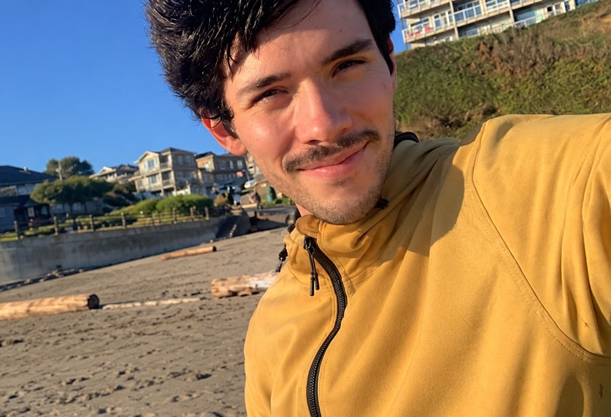

Aaron Underhill
Computer Science • Software Engineering • Data Science
I build software and data-driven projects with a strong interest in sustainability, emerging technologies, and the future we can create by combining technological progress with sustainability.
View My WorkFeatured Projects
View All My Projects Here!Skills
Languages
Python • JavaScript • SQL • C • C++ • HTML • CSS • Kotlin
Web and Data
Node.js • Express • React • Next.js • PostgreSQL • Supabase • REST APIs • Embeddings and RAG
Tools
Git • GitHub Actions (CI) • Automated testing • Vercel • Linux
A Little About Me
I'm a Computer Science graduate with a focus in Data Science, interested in software engineering, machine learning and AI, sustainability, and emerging technologies.
More About Me →Contact
Aaron Underhill
You can reach me at aaron.m.underhill@gmail.com.
GitHub